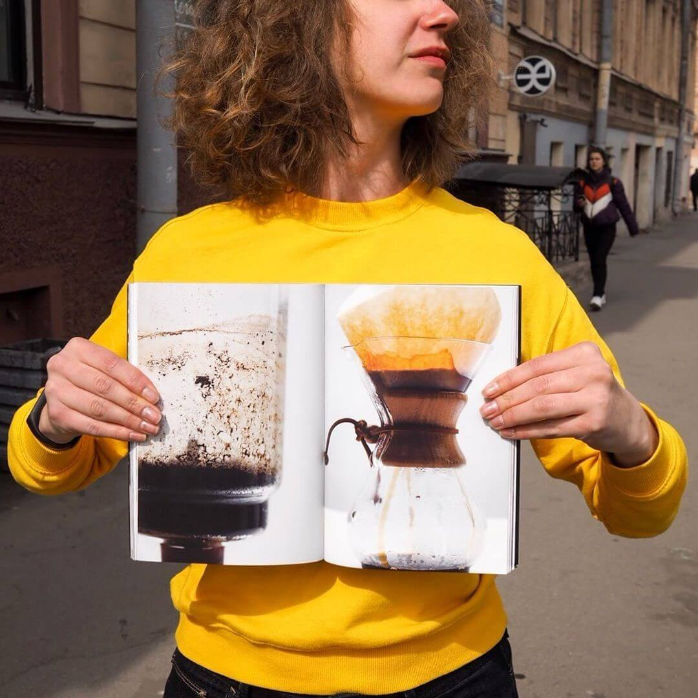

As doenças articulares não são uma sentença. Experiência pessoal: acabei com a artrite reumatoide apesar de todas as previsões médicas.
Olá, chamo-me Ana, tenho 31 anos de idade. Há mais de seis anos, fui diagnosticado com artrite reumatoide.

Sim, os problemas articulares não são uma coisa dos idosos. Todos nós corremos risco, independentemente da idade e do sexo.
Hoje em dia todo mundo sabe sobre o cancro, HIV, AIDS ... sabe que a humanidade está em constante busca dum meio para o tratamento deles. Mas há poucos que falem da artrite reumatoide, infelizmente. E ninguém procura remédios. Embora todo paciente com esta doença saiba: é quase impossível livrar-se da doença completamente. Bem, pelo menos é o que os “médicos” dizem.
E posso supor ao que esse «silêncio» está relacionado. Já existe uma cura para a artrite reumatoide. Encontrei e testei em mim mesmo.
Agora os médicos que me tratavam ao longo de tantos anos de sofrimento, pretendem não entender nada: um milagre aconteceu – não temos outras palavras! Artrite reumatoide não tem cura! Rapariga, o seu caso é um fenômeno, precisas de ser entregue ao Instituto, «para fazerem experimentos contigo».
Chocarei ainda mais os pobres esculápios: não estou sozinho, há milhares de nós. Não apenas os pacientes com a artrite grave foram curados. Há um grande número de pessoas com várias doenças degenerativas das articulações que conseguiram retornar a uma vida plena e ativa. Mas contarei tudo em pormenores.
Então, como eu já tinha dito, tudo começou seis anos atrás.
O primeiro sinal alarmante foi a rigidez matinal nas mãos. Os médicos continuavam a dizer que era a culpa do trabalho em computador.
Mais tarde, percebi que não apenas os braços, mas também as pernas começaram a doer-me. Sair da cama tornou-se uma tortura diária - os primeiros 20-40 minutos após eu acordar pareciam-me um pesadelo. As dores nas ficaram tão graves que nem conseguia vestir-me até que um remédio analgésico funcione.
Idas aos médicos e resultados de exames levaram-me a um reumatologista. Uma médica idosa insistia: “Menina, usa roupas mais quentes e não inventa coisas. Você não tem nenhuma artrite reumatoide. Dois anos depois, novamente consegui uma consulta com aquela avó, e ela admitiu o seu erro: «Às vezes acontece».
Existem muitos médicos assim. Confiem em mim, sou uma paciente experiente de reumatologistas, neste ramo da medicina só tem o caos. Eu tive sorte de encontrar um profissional. Mas antes que isso tenha acontecido, ouvi mil vezes: “A artrite não tem cura. Aprende a viver com ela.
«Que porcaria é essa?! São vocês que não têm cura».
Tenho apenas 25 anos de idade. Sou jovem e tenho muitos planos. Resolvi encontrar um remédio que me ajudasse custa o que custar.
Pouco antes de ser diagnosticada com a artrite, tinha deixado o meu antigo emprego e virei barista. Adorava o meu trabalho. Eu já tinha um plano de negócios pronto para os próximos anos. Mas o desespero cobria-me cada vez mais. Repetindo o meu trabalho cada dia mais, percebi que não conseguia levantar o copo da mesa. Não tinha uma força física suficiente para continuar a fazer o que eu amo.
Sonho deve tornar-se real!
Hoje em dia eu acordo às 6 todas as manhãs (sem tomar analgésicos) e vou trabalhar à minha cafeteria favorita «Choco Bean». Eu mesma, com muito prazer (e sem dores), preparo bebidas para os meus clientes. E até levanto os copos por conta própria. E não apenas eles!
Sim, como já tinha dito antes, tive a sorte de encontrar um bom médico. Esperei três meses a minha vez na fila. Para evitar um aumento múltiplo no número de clientes, esse médico pediu para não mencionar o nome dele no artigo. Ele é um dos poucos que diz, apesar da opinião comum: «A artrite pode ser curada!» E ele comprova-o com milhares de exemplos da sua própria prática médica. Eu, por exemplo, posso garantir que a doença tem cura, sim.
Depois de passar por todo este inferno que a doença traz, sinto uma grande compaixão pelas pessoas com dores articulares. E eu entendo que nem todo mundo tem forças para lidar com essa doença, como eu fiz. Quantas pessoas foram convencidas pelos pseudo-médicos que as dores agora é uma parte integrante das suas vidas? Gostava de evitar que vocês esperem meses na fila para conseguir o tratamento: eu curei a doença com o.
Vocês provavelmente já ouviram falar dos condroprotetores. O este não é um remédio condroprotetor comum. É o único condroprotetor de quinta geração. Ele não apenas protege as articulações contra destruição, mas também as recupera. Além disso, o alivia dores e a inflamação, funciona como um anti-inflamatório não esteroide, sendo um produto completamente natural.

Ao longo do artigo, tentei contornar cuidadosamente a questão de uma conspiração farmacêutica. Mas essa suposição surge por conta própria: primeiro, uma propaganda generalizada - o tratamento da artrite é apenas sintomático. Somos forçados de tomar analgésicos e outros remédios que aliviam apenas os sintomas. E o dinheiro gasto em vão é apenas uma das poucas coisas que podem acontecer. Eu experimentei na minha própria pele o que são medicamentos antiartríticos comprados em farmácias e quais são os seus efeitos colaterais.
Primeiro, é impossível encontrar o em farmácias. Vocês já sabem porque ... Mas gostava de acalmá-los. O meu médico deu-me um link para o site oficial do fabricante, onde ele próprio compra o medicamento para os seus clientes. O é bom para o tratamento de uma ampla variedade de doenças articulares - de artrite e artrose a lesões traumáticas temporárias.
PedirEu sei como são valiosas as palavras de apoio quando você está a lutar diariamente contra o seu próprio corpo. É tão importante é não perder a esperança. Portanto, quero resumir a minha história com as palavras - nunca desistam. Não acreditem no que dizem, apesar da popularidade desta opinião. Seguem os seus sonhos, acreditem no melhor e jamais desistan.
E tendo chegado ao sucesso, ajudem os outros.
Acho que eu cumpri a minha missão.üòä

Comentários:
Há pouco esteve no «Choco Bean», muito giro, muito fixe. Boa sorte e muita força!Ana:
Muito obrigada!
Pois, parece muito a minha hist√≥ria. Eu lutei com a artrite por 13 anos, comecei a tomar horm√¥nios 10 anos ap√≥s ser diagnosticada com a doen√ßa. Foi assim que eu acabei com a minha sa√∫de ... Mas tamb√©m estava √† procura dum rem√©dio. Estudei toda a literatura na Internet sobre a artrite, visitei todos os f√≥runs. Não confiem em m√©dicos. Apenas tendo estudado a questão sozinha, consegui encontrar a verdade. Eu sei, eu sei, Ana, de quem falaste! üòä Mas, como o nosso querido amigo pediu anonimato - não vou dizer o nome dele. Eu tamb√©m fui tratada por esse reumatologista. E sim, tamb√©m fui curada com o .Ana:
Luísa, esta doença faz você conhecer este médico. Parabéns!
As pessoas como a autora desta história impressionam. Nós, pessoas comuns sem um diagnóstico terrível, estamos preocupadas com coisas bobas, sofremos por algo tão insignificante, e esquecemo-nos completamente que o mais importante que temos é a nossa saúde.
A autora dessa história é incrível! Eu mesma não tenho artrite, mas artrose que começou quando tinha 18 anos de idade devido às constantes sobrecargas associadas à minha profissão (sou música). Eu também tentei ser tratada - na minha opinião, acabei por agravar a situação ainda mais: no início, também foi diagnosticada com uma doença errada, depois injetaram-me o ácido hialurônico na articulação. Agora eu percebo que no meu caso eu podia ter evitado tusso aquilo. Como resultado, nos últimos dois anos não houve um dia em que a articulação não me doía. Não consigo dobrar o meu braço, não consigo me apoiar nela, basicamente não consigo fazer muita coisa, mesmo na vida quotidiana. É muito desmotivador. E acima de tudo, estou com medo, porque antes de ficar doente, pensava que tínhamos poucas doenças incuráveis, como o cancro ou AIDS. Mas acontece que muitas pessoas sofrem com articulações, ligamentos, tendões – mas agora acho que existe uma solução para o problema! Ana, muito obrigado! Acabei de pedir o . Salvaste-me. Pois, tu mesma sabes que para um pianista, os dedos saudáveis é a coisa mais importante. Eu serei tratada!Ana:
De nada! Seja saudável =)
Um ano atrás fui diagnosticada com a "artrite reumatoide ". Desde então, fiquei a saber muito da doença e ainda continuo a pesquisar sobre o problema. Muito obrigada pelo artigo, inspiração e !
Ana, a minha mãe também foi tratada por Carlos P =) Por dez anos ela também sofria de ciática. O salvou-a, há dois anos que ela literalmente «vibra» como uma borboleta, não se lembra da doença …Ana:
Shhh! O médico pediu para não citar o nome dele =) Desejo saúde à tua mãe!